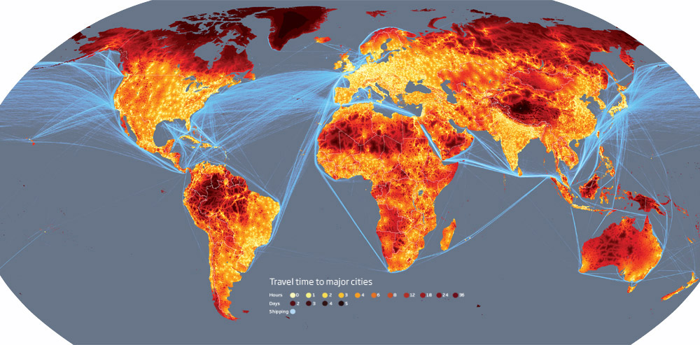

La complexité géographique

Small world
Cette carte parle d’elle-même. Le monde est devenu minuscule, géographiquement massivement interconnecté. Encore une raison pour ne plus chercher à vouloir lui appliquer les règles inventées au temps des Égyptiens, des Grecs ou des Romains, voire, ce qui est à peine plus moderne, durant la révolution industrielle. Aucun de nos ancêtres ne s’est trouvé dans la situation où nous trouvons tous aujourd’hui. Moins de 10 % de la surface terrestre se trouve à plus de 48 heures de voyage !
Suite | 2009 | Sommaire | Texte publié mercredi 22 avril 2009